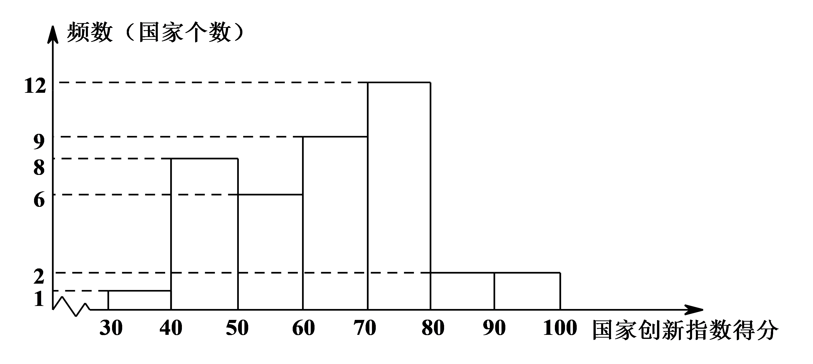
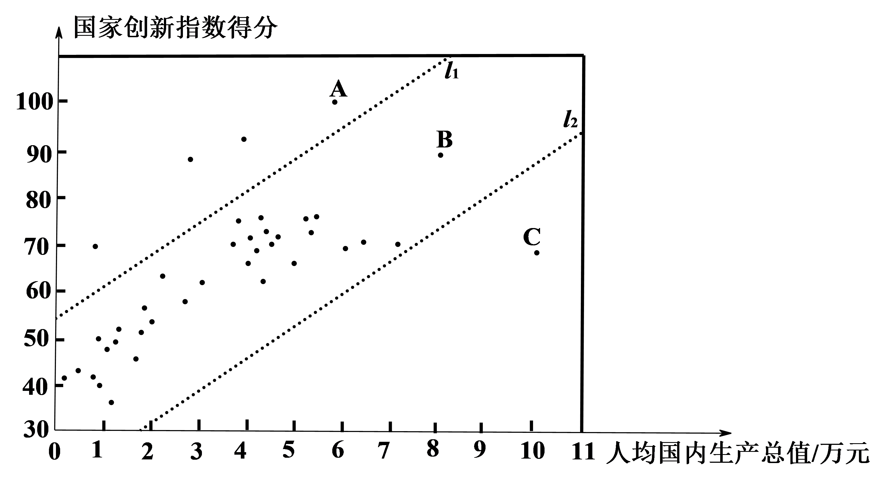
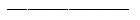
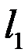
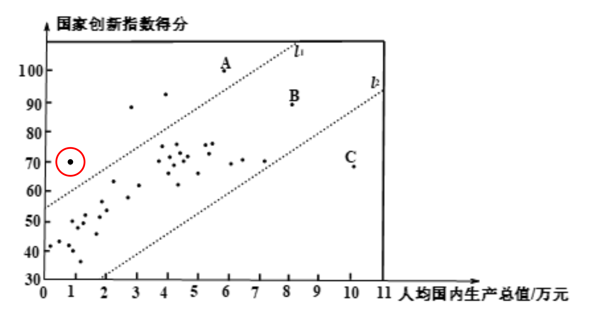

2019年北京市中考数学试题 · 数学解答题 第21题 · 对应解析
21．国家创新指数是反映一个国家科学技术和创新竞争力的综合指数．对国家创新指数得分排名前40的国家的有关数据进行收集、整理、描述和分析．下面给出了部分信息：
a．国家创新指数得分的频数分布直方图（数据分成7组：
30≤x＜40，40≤x＜50，50≤x＜60，60≤x＜70，70≤x＜80，80≤x＜90，90≤x≤100）；

b．国家创新指数得分在60≤x＜70这一组的是：
61.7 62.4 63.6 65.9 66.4 68.5 69.1 69.3 69.5
c．40个国家的人均国内生产总值和国家创新指数得分情况统计图：

d．中国的国家创新指数得分为69.5.
（以上数据来源于《国家创新指数报告（2018）》）
根据以上信息，回答下列问题：
（1）中国的国家创新指数得分排名世界第

；（2）在40个国家的人均国内生产总值和国家创新指数得分情况统计图中，包括中国在内的少数几个国家所对应的点位于虚线

的上方．请在图中用“”圈出代表中国的点；（3）在国家创新指数得分比中国高的国家中，人均国内生产总值的最小值约为万美元；（结果保留一位小数）
（4）下列推断合理的是．
①相比于点A，B所代表的国家，中国的国家创新指数得分还有一定差距，中国提出“加快建设创新型国家”的战略任务，进一步提高国家综合创新能力；
②相比于点B，C所代表的国家，中国的人均国内生产总值还有一定差距，中国提出“决胜全面建成小康社会”的奋斗目标，进一步提高人均国内生产总值．
【解析】
（1）17
（2）

（3）2.7（4）①②